Cobranza, contabilidad de partida doble, portería con código QR y soporte técnico, pensado primero para el teléfono. Para Hispanoamérica, empezando por Venezuela — y listo para adaptarse a otros países sin inconvenientes.
Collections, real double-entry accounting, QR-code gate access and technical support, built phone-first. For Spanish-speaking Latin America, starting with Venezuela — and ready to adapt to other countries without issue.
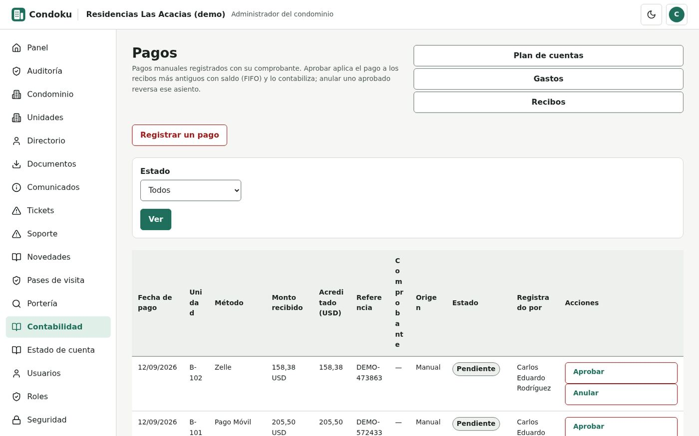
El administrador aprueba o anula un pago en segundos. Datos inventados.
The administrator approves or voids a payment in seconds. Made-up data; the interface is in Spanish.
Sin un libro contable de verdad, cuadrar un balance a mano es lento y fácil de equivocar.
Without a real accounting ledger, balancing the books by hand is slow and error-prone.
Cada pago llega en una moneda distinta, a una tasa distinta del día, convertida a mano.
Every payment arrives in a different currency, at a different day's rate, converted by hand.
Un aviso en WhatsApp, un recibo por correo, un comprobante que se pierde en el chat.
A notice on WhatsApp, a receipt by email, a payment proof lost in the chat.
Un cuaderno de visitas que nadie puede auditar ni consultar en tiempo real.
A paper visitor logbook nobody can audit or check in real time.
El propietario sube su comprobante, el administrador lo aprueba con un clic y el saldo se actualiza solo, aplicado primero a lo más antiguo (FIFO).
The owner uploads their proof, the administrator approves it with one click, and the balance updates itself, applied first to the oldest debt (FIFO).
Libro diario, mayor y balance de comprobación, con un asiento detrás de cada movimiento — nunca una hoja de cálculo disfrazada.
A journal, ledger and trial balance, with an entry behind every transaction — never a spreadsheet in disguise.
La tasa del día queda guardada en el momento de cada movimiento, así que un recibo de hace meses sigue siendo exacto.
The day's rate is stored at the moment of each transaction, so a receipt from months ago stays exact.
Un pase de visita se valida escaneando el código o con un código corto de respaldo, con entrada y salida registradas.
A visitor pass is validated by scanning a QR code or a short backup code, with entry and exit both logged.
Tickets con categoría, prioridad y estado, y un libro de novedades para conserjería y vigilancia.
Tickets with category, priority and status, plus a shift logbook for front-desk and security staff.
Reglamento, actas y balances, cada uno visible solo para administración, junta, propietarios o todos — nunca un documento de la junta por error.
Bylaws, minutes and statements, each visible only to administration, the board, owners or everyone — never a board document by mistake.
Una administradora gestiona varios condominios desde un solo lugar y cambia entre ellos sin cerrar sesión.
A management company runs several condominiums from one place and switches between them without logging out.
Cuatro niveles de severidad, desde una hora de primera respuesta hasta 24 horas, con el reloj pausado al esperar al cliente.
Four severity levels, from a one-hour first response to 24 hours, with the clock paused while waiting on the customer.
Administrador, contador, junta, propietario, inquilino, conserje, vigilante: cada uno ve solo lo suyo.
Administrator, accountant, board member, owner, tenant, front-desk staff, security guard: everyone sees only their own.
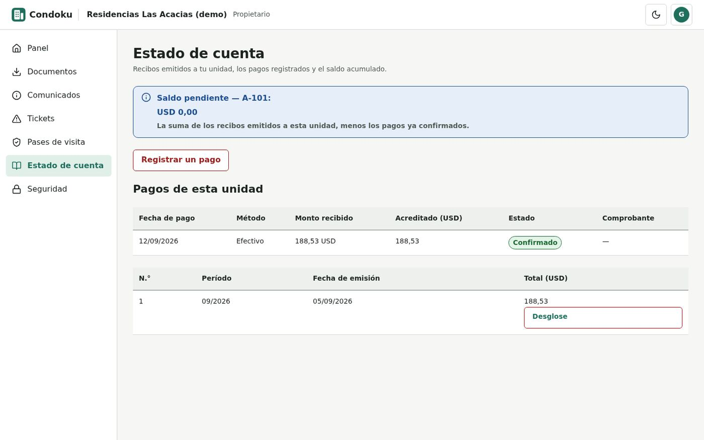
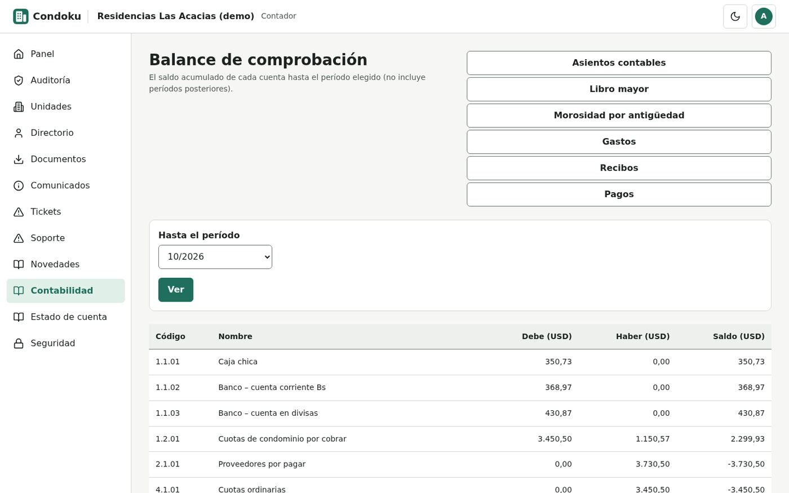
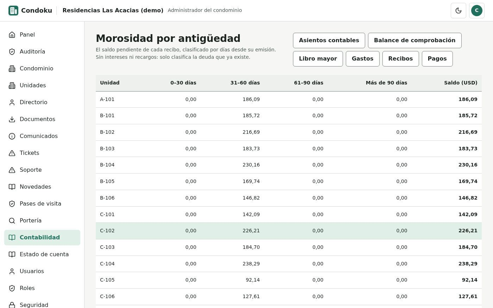
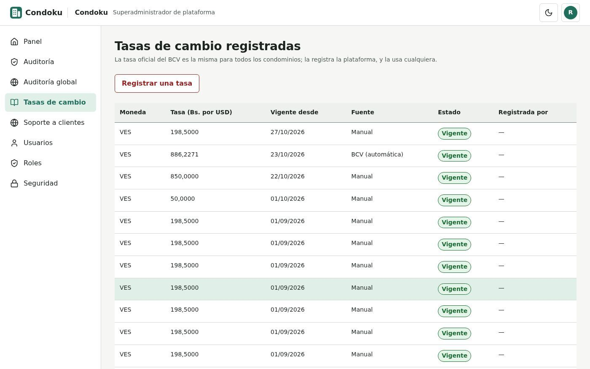
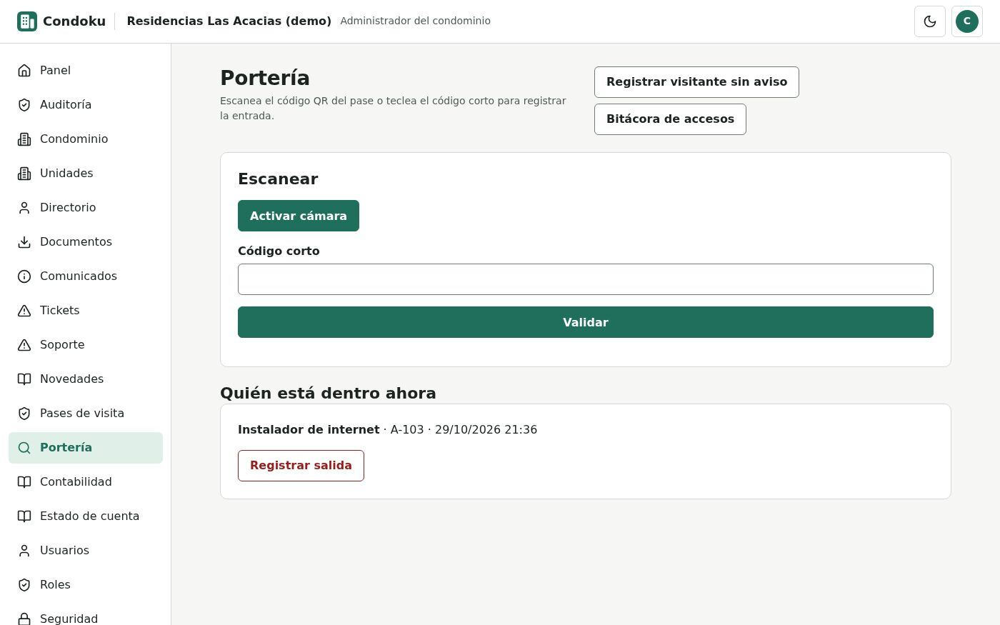
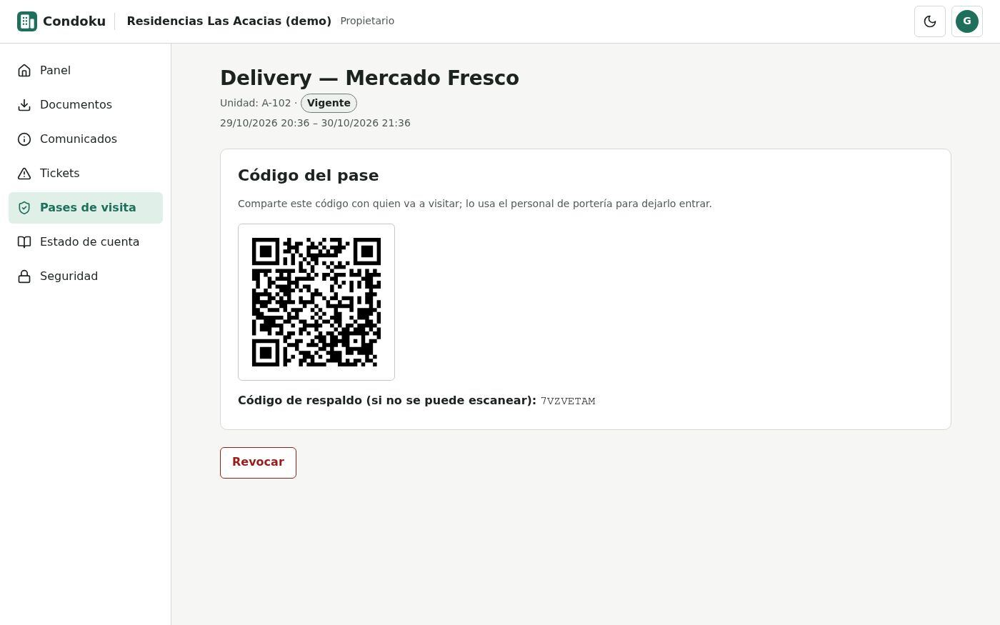
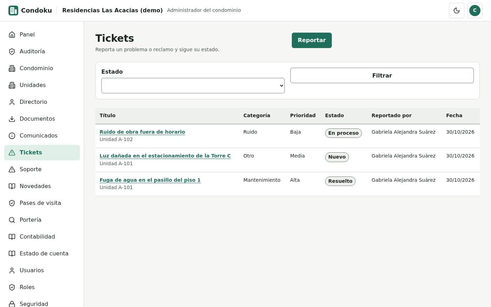
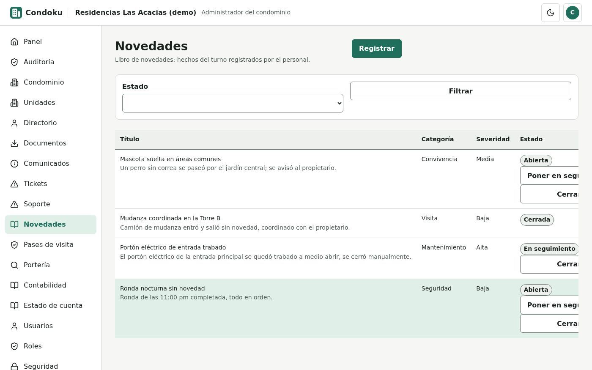
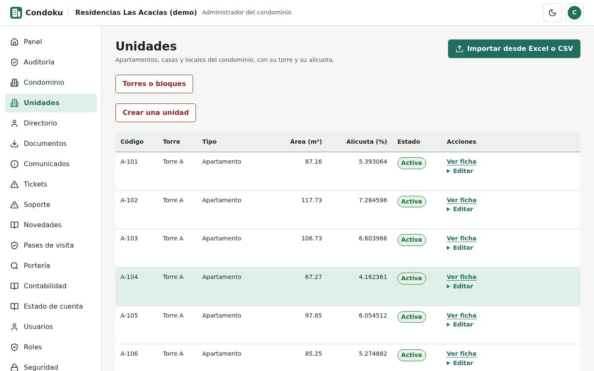
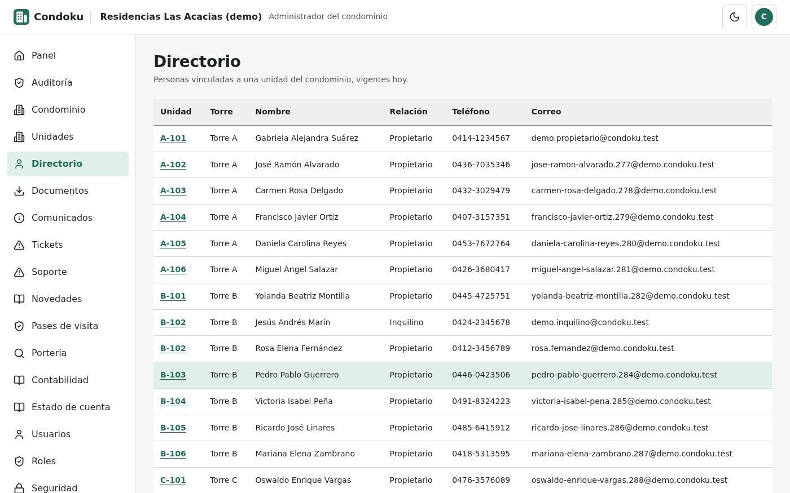
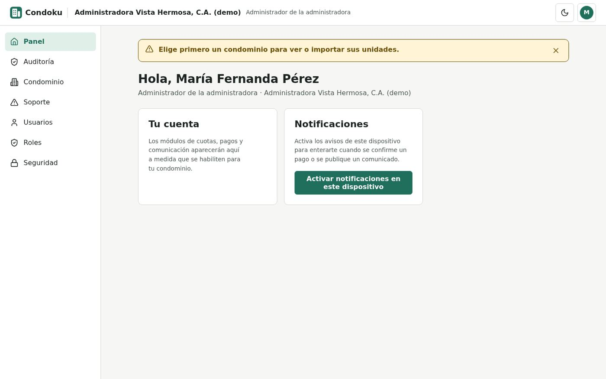
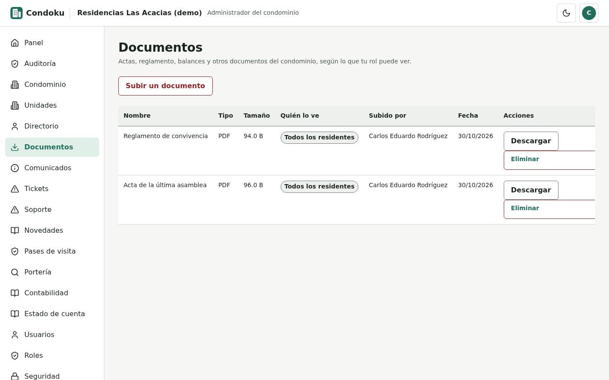
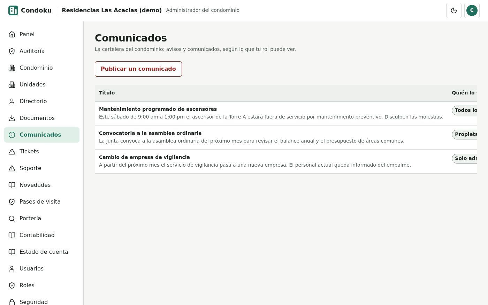
Ensayo con condominios, torres, unidades y residentes inventados.
Test environment with made-up condominiums, towers, units and residents; the interface is in Spanish.
| Administrador | Administrator | Condominio, cobranza, contabilidad, usuarios y comunicados.Condominium, collections, accounting, users and notices. |
| Contador | Accountant | Libro diario, mayor, balance de comprobación y gastos.Journal, ledger, trial balance and expenses. |
| Junta | Board member | Consulta las cuentas y las novedades de su condominio, sin editar.Reviews their condominium's books and logbook, read-only. |
| Administradora (cartera) | Management company | Gestiona varios condominios desde una sola cuenta.Runs several condominiums from one account. |
| Superadministrador | Platform superadmin | Tasas de cambio y configuración general.Exchange rates and overall settings. |
| Soporte de la plataforma | Platform support | Atiende los casos de todos los clientes desde una bandeja centralizada.Handles every customer's cases from one centralized queue. |
| Propietario | Owner | Su estado de cuenta, sus pagos y sus pases de visita.Their account statement, payments and visitor passes. |
| Inquilino | Tenant | El estado de cuenta de su unidad mientras dure el alquiler.Their unit's statement for the duration of the lease. |
| Conserje | Front-desk staff | El libro de novedades de su turno.Their shift's logbook. |
| Vigilante | Security guard | Valida pases de visita y ve quién está dentro ahora.Validates visitor passes and sees who is on site right now. |
Cada persona entra con su propia cuenta y ve solo los datos de su condominio.
Everyone signs in with their own account and sees only their own condominium's data.
| Aislamiento multi-condominio | Multi-condominium isolation | Una administradora gestiona varios condominios, pero los datos de uno nunca se mezclan con los de otro.A management company handles several condominiums, but one's data never mixes with another's. |
| Doble autenticación | Two-factor access | Quien administra dinero o varios condominios necesita una segunda clave de un solo uso, además de su contraseña.Anyone handling money or several condominiums needs a one-time second code, on top of their password. |
| Bitácora que nadie puede borrar | A log nobody can erase | Cada acción importante queda en una tabla de solo inserción: ni un administrador puede editarla después.Every important action lands in an insert-only table: not even an administrator can edit it afterwards. |
| Contabilidad que no se reescribe | Accounting that is never rewritten | Un asiento ya contabilizado se corrige con un asiento de reverso, nunca editando el original.A posted entry is corrected with a reversing entry, never by editing the original. |
| Permisos granulares | Granular permissions | 54 permisos independientes: cada pantalla exige el suyo, no un simple «administrador ve todo».54 independent permissions: every screen requires its own, not a blanket "administrator sees everything." |
| Calidad | Quality | 2.487 pruebas automatizadas verifican el aislamiento, los permisos y los cálculos contables antes de cada cambio.2,487 automated tests verify isolation, permissions and accounting calculations before every change. |
| PHP | Lógica: cobranza, contabilidad, portería, permisos y aislamiento multi-condominio, y las pantallas, pensadas primero para el teléfono.Logic: collections, accounting, gate access, permissions and multi-condominium isolation, plus the phone-first screens. |
| SQL | Almacenamiento multi-condominio.Multi-condominium storage. |
Con un condominio de prueba armado para su caso: cuántos condominios administra y qué le pesa más hoy.
With a test condominium set up for your case: how many condominiums you manage and what weighs on you most today.